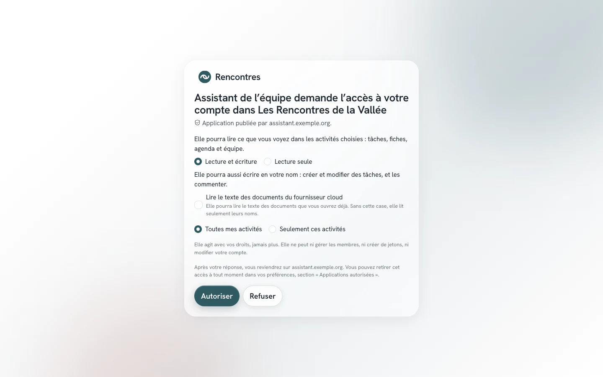
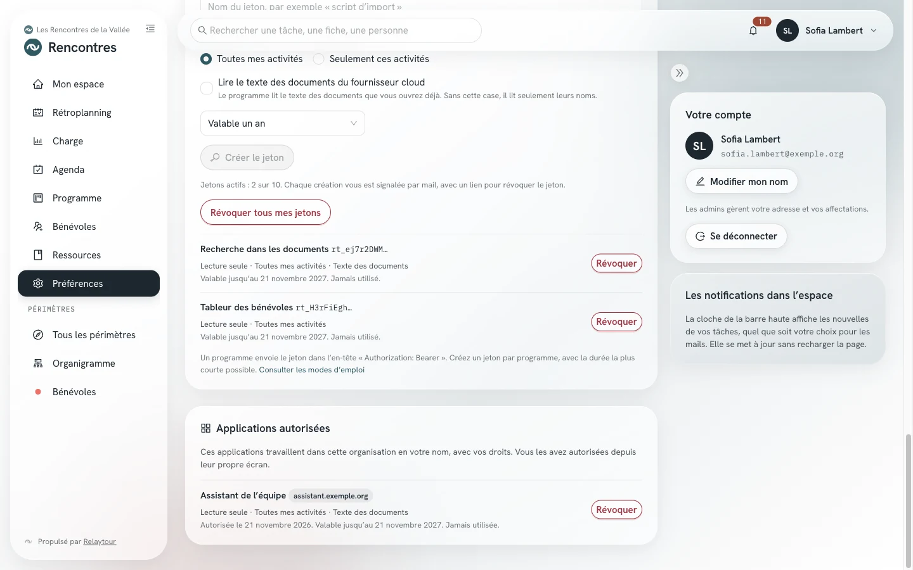

Une application tierce travaille dans votre organisation en votre nom : un outil d'automatisation, un tableau de bord ou un agenda. Vous l'autorisez depuis votre installation de Relaytour, sans copier de secret. Elle reçoit vos droits, jamais davantage.
Les premières sections s'adressent à chaque membre et aux admins de l'organisation. La section « Relier une application » s'adresse aux personnes qui écrivent une application.
Point de départ
Ce qu'est une autorisation d'application
Un jeton d'accès convient à un programme que vous installez vous-même. Une application tierce suit un autre parcours : elle vous envoie sur l'écran de consentement de votre installation, et vous lui accordez l'accès.
Votre accord crée une autorisation d'application. Elle appartient à une personne et à une organisation, et elle porte une portée, des activités et une date de fin, comme un jeton d'accès. L'application ne voit jamais votre adresse de connexion ni vos codes.
Chaque membre
Autoriser une application
L'application propose un bouton de connexion à Relaytour et vous demande l'adresse de votre installation. Votre navigateur ouvre alors l'écran de consentement. Si vous n'êtes pas connecté·e, l'espace organisateur vous demande d'abord votre code, puis vous ramène sur cet écran.
Le module « API » de l'organisation doit être actif. Sinon, l'écran l'indique et aucune autorisation n'est possible.
L'écran de consentement
/autoriser/<demande>
L'écran nomme l'application et l'hôte qui la publie. Il indique aussi l'adresse où votre navigateur reviendra après votre réponse.
OrganisationChoisir l'organisation où l'application travaillera. Ce choix n'apparaît que si vous êtes membre de plusieurs organisations.
Lecture seuleLimiter l'application à la lecture des tâches, des fiches, de l'agenda et de l'équipe que vous voyez.
Lecture et écriturePermettre aussi à l'application de créer, de modifier et de commenter des tâches en votre nom. Ce choix n'apparaît que si l'application demande l'écriture.
Lire le texte des documents du fournisseur cloudPermettre à l'application de lire le texte des documents que vous ouvrez déjà dans l'espace organisateur. Sans cette case, elle lit seulement leurs noms. La case est décochée par défaut, et elle n'apparaît que si l'application demande cette lecture.
Seulement ces activitésChoisir les activités que l'application voit. Sans ce choix, l'autorisation couvre toutes vos activités.
AutoriserAccorder l'accès. Votre navigateur revient dans l'application, qui reçoit ses jetons.
RefuserNe rien accorder. Votre navigateur revient dans l'application avec votre refus.

L'écran de consentement d'une application fictive, qui demande l'écriture et la lecture du texte des documents.
Une application qui s'est enregistrée elle-même porte l'étiquette « Non vérifiée ». Son nom vient de l'application seule, et l'installation ne peut pas le confirmer.
Vos droits, jamais plus
L'application lit et modifie ce que vous lisez et modifiez. Elle ne gère jamais les membres, ne crée pas de jetons et ne modifie pas votre compte.
Un mail à chaque accord
Relaytour vous envoie un mail après chaque autorisation. Ce mail porte un lien qui révoque l'autorisation en un geste.
Un an au plus
Une autorisation vaut un an. Relaytour vous prévient par mail trente jours avant sa fin. L'application vous redemande alors votre accord.
Chaque membre
Suivre et révoquer vos autorisations
Vos autorisations se trouvent dans vos préférences, sous les jetons d'accès. La section ne s'affiche que si vous avez déjà autorisé une application dans l'organisation.
La section « Applications autorisées »
/<activité>/preferences#applications
Chaque ligne indique le nom de l'application, sa portée, ses activités, la date de l'accord, la date de fin et le dernier usage. L'étiquette « Texte des documents » signale une application qui lit le texte des documents.
RévoquerMettre fin à l'autorisation. L'application reçoit un refus dès sa requête suivante.

La section « Applications autorisées », sur l'organisation d'exemple. L'application est fictive.
Une autorisation révoquée ou expirée reste affichée trente jours, avec son état. Une personne a au plus vingt autorisations actives dans une organisation.
Événement
Ce qui arrive à l'autorisation
Vous révoquez l'autorisation
Elle prend fin aussitôt.
L'application se déconnecte
Elle prend fin aussitôt. L'application la révoque elle-même.
Un admin de l'organisation la révoque
Elle prend fin, et Relaytour vous prévient par mail.
Un ancien jeton de l'application revient
Relaytour y voit le signe d'un vol. L'autorisation prend fin, et Relaytour vous prévient par mail.
Votre compte est archivé dans l'organisation
Toutes vos autorisations prennent fin.
Le module « API » est désactivé
L'autorisation ne répond plus, puis répond de nouveau à la réactivation.
Le module « API » est suspendu
Toutes les autorisations de l'organisation prennent fin.
Admins de l'organisation
Encadrer les applications de l'organisation
Les applications tierces dépendent du module « API ». Un admin de l'organisation l'active dans le panneau « API pour les programmes tiers » de l'écran « Organisation ». Le mode d'emploi de l'API décrit ce panneau.
Lire les autorisations
Le panneau liste les jetons de toute l'organisation. Une autorisation d'application y porte le nom de l'application, son identifiant et, le cas échéant, l'étiquette « Texte des documents ».
Révoquer celle d'un membre
Un admin de l'organisation révoque l'autorisation d'un membre depuis cette liste. Relaytour prévient le membre par mail.
Refuser une application
Sous « Applications refusées », un admin indique l'identifiant d'une application. Ses autorisations dans l'organisation prennent fin, et elle ne peut plus en demander.
« Lever le refus » permet de nouveau à l'application de demander des autorisations. Les autorisations révoquées par le refus ne reviennent pas. Une organisation refuse au plus deux cents applications.
L'administration de l'installation peut aussi fermer la fonction, la limiter à une liste d'applications ou refuser une application pour toutes les organisations. Le déploiement de référence décrit ces réglages.
Personnes qui écrivent une application
Relier une application
Chaque installation de Relaytour est son propre serveur d'autorisation OAuth 2.1. Une application ne connaît que l'adresse de l'espace organisateur, et elle découvre le reste par les documents de métadonnées.
Le parcours ne demande ni inscription préalable, ni secret de client. L'application publie un document qui la décrit, et l'adresse de ce document lui sert d'identifiant.
Adresse
Ce qu'elle sert
/.well-known/oauth-protected-resource
Les métadonnées de la ressource (RFC 9728). Un refus 401 de l'API désigne ce document dans l'en-tête WWW-Authenticate.
/.well-known/oauth-authorization-server
Les métadonnées du serveur d'autorisation (RFC 8414).
/oauth/autoriser
Le début du parcours, ouvert dans le navigateur de la personne.
/oauth/jeton
L'échange d'un code, et le renouvellement des jetons.
/oauth/revocation
La révocation d'une autorisation par l'application (RFC 7009).
/oauth/enregistrement
L'enregistrement dynamique (RFC 7591), seulement si l'installation l'ouvre. Il est fermé par défaut.
1. Publier le document de l'application
L'application publie un document JSON sur une adresse https publique, avec un chemin. Cette adresse est son client_id, et le document la répète.
LectureUn nom de domaine qui mène à une adresse publique. Une adresse IP et localhost sont refusés. Pas de redirection, 5 secondes et 16 Ko au plus.
Nom80 caractères au plus, sans retour à la ligne ni caractère invisible de mise en forme.
RetoursDix adresses au plus, en https, ou en http sur 127.0.0.1 ou [::1] avec un port libre (RFC 8252).
CacheL'installation garde le document selon son en-tête Cache-Control, 24 heures au plus.
2. Envoyer la personne sur l'écran de consentement
L'application ouvre /oauth/autoriser dans le navigateur, avec un défi PKCE S256 et la ressource visée. La ressource est l'origine de l'espace organisateur.
La portée vaut lecture, ou lecture ecriture. Une application qui lit le texte des documents ajoute documents (voir Lire le texte d'un document). La personne peut réduire la portée demandée, jamais l'élargir. Le retour porte code, state et iss (RFC 9207) : l'application vérifie que iss vaut l'émetteur attendu.
3. Échanger le code
Le code vaut 60 secondes et ne sert qu'une fois. L'application l'échange contre un jeton d'application et un jeton de renouvellement.
La réponse porte access_token (préfixe rto_, une heure), refresh_token (préfixe rtr_, 90 jours) et la portée accordée dans scope. Cette portée contient documents seulement si la personne a coché la case des documents.
4. Appeler l'API
Le jeton d'application s'envoie dans l'en-tête Authorization, sur /graphql ou sur /api/v1. Les routes, les erreurs et les débits sont ceux du mode d'emploi de l'API.
5. Renouveler
Avant la fin de l'heure, l'application envoie grant_type=refresh_token. Elle reçoit une nouvelle paire et doit oublier l'ancienne : un ancien jeton de renouvellement qui revient révoque l'autorisation.
6. Se déconnecter
L'application envoie l'un de ses jetons à /oauth/revocation. L'autorisation entière prend fin, avec tous ses jetons.
Erreur OAuth
Ce qu'elle signifie
invalid_request
Un paramètre manque ou n'a pas la forme attendue, par exemple un défi PKCE absent ou d'une autre méthode que S256.
invalid_scope
La portée demandée contient une valeur autre que lecture, ecriture ou documents.
invalid_target
Le paramètre resource manque ou désigne une autre installation.
invalid_grant
Le code ou le jeton de renouvellement est inconnu, expiré, déjà utilisé ou présenté par une autre application. L'autorisation a pu prendre fin.
access_denied
La personne a refusé l'accès.
Une adresse de retour inconnue, ou un document illisible, ne renvoie pas vers l'application. L'installation affiche alors l'erreur elle-même, pour ne jamais rediriger vers une adresse non déclarée.
L'écran de consentement ne charge rien de l'application, ni logo ni script, et ne s'affiche jamais dans un cadre.
Bonnes pratiques
Garder la main
Lire l'écranVérifiez l'hôte qui publie l'application avant d'autoriser. Méfiez-vous d'une application « Non vérifiée » que vous n'attendiez pas.
Le moins de droits possibleChoisissez la lecture seule et les seules activités utiles, même si l'application demande davantage.
Lire vos mailsRévoquez aussitôt une autorisation que vous ne reconnaissez pas, depuis le lien du mail ou depuis vos préférences.
Faire le triRévoquez les applications que vous n'utilisez plus. La date du dernier usage, dans la liste, aide à les repérer.